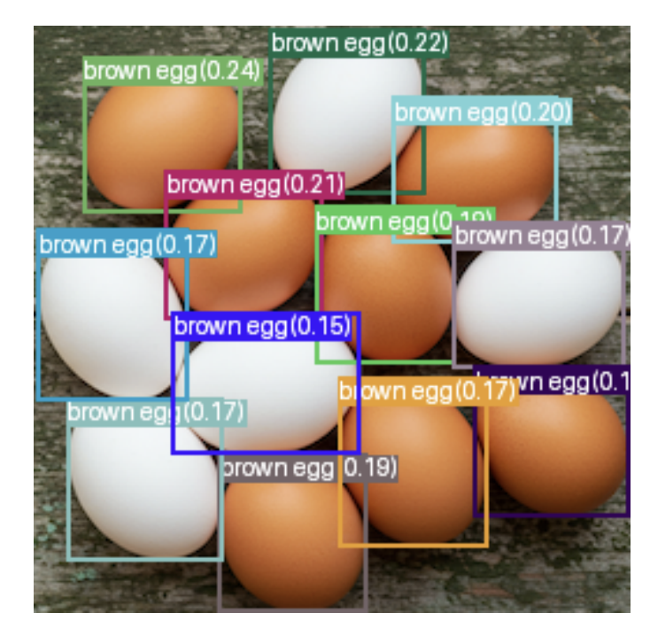
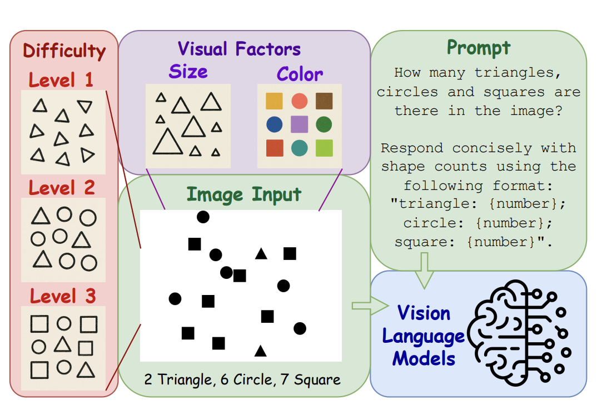
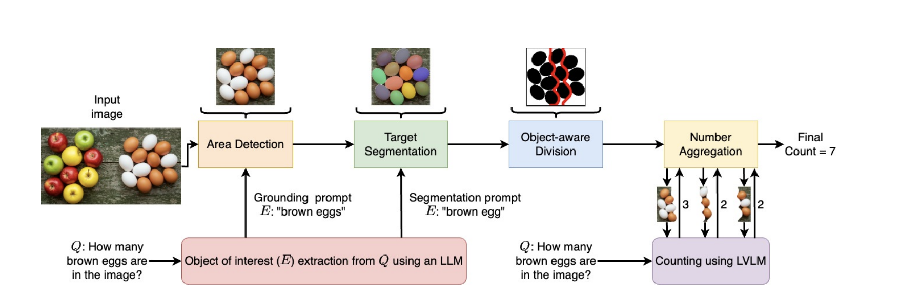

VLMs Can See Objects. But Why Can’t They Count Them?
A Simple Task That Is Surprisingly Hard
Vision-language models can often describe what they see, answer questions, read text from a screenshot, identify what kinds of things are present, and explain what is going on in a picture or video. For many tasks, the results are impressive. You can show a VLM many different kinds of inputs, such as a kitchen, a factory floor, or a medical diagram, and it can accurately respond in natural language.
But there is one basic visual task that these models are frequently unable to perform reliably: counting.
It is surprisingly non-trivial for a model to count how many objects there are. At first glance, this seems odd. If the model can see objects, you would assume that it should also be able to count them.
However, counting requires more than simple recognition. A model that can report “boxes on the shelf” is not necessarily capable of reporting “47 boxes on the shelf.”
Recognition is not the same as enumeration.
Where Does Counting Go Wrong?
Why can’t a model count how many objects there are?
A common issue is ambiguity. Real-world scenes can be quite challenging for a model to interpret. The image might be cluttered, or objects might be bunched together and hard to distinguish. The model might be asked to count things that are partially or fully occluded, or objects that are printed on a page.
- The model can have trouble simply distinguishing an object from its surroundings.
- It can mistake a reflected image for a real object or print.
- A real object can be mistaken for a reflection or print.
- It simply does not know what to count.
Likewise, recognition also poses a problem for VLMs when it comes to counting. Counting “eggs” is much easier than counting “brown eggs” if there are white eggs and brown eggs mixed in. Counting “clocks” is much easier than counting “clocks showing two-thirty” if there are many clocks in similar configurations but different times.

However, even in carefully controlled settings, counting can still be unexpectedly hard. Recent research using simple geometric shapes has shown a compositional breakdown: VLMs perform significantly worse when asked to count images containing multiple object types, even when the objects are simple shapes like circles, triangles, or squares. [Guo et al., 2025].

For example, on VLMCountBench, Qwen2.5-72B scores 0.60 accuracy in the Level 1 setting, where there is only one shape type to count, but drops to 0.45 accuracy in the Level 3 setting, where three shape types must be counted separately [Guo et al., 2025].
A related issue occurs when the total number of objects increases. Large-count evaluations have shown that some LVLMs perform better on small quantities, often fewer than 20 objects, but performance deteriorates as object counts grow larger [Qharabagh et al., 2026].
So there are at least two ways that counting can be unexpectedly challenging:
- Compositional complexity: different types of objects need to be counted separately.
- Scale: more total objects need to be counted.
Counting Is Not Simply Prompt Engineering
A natural approach to these challenges is to improve the prompt. After all, if the model fails to count, perhaps it needs to be prompted more carefully.
Research has explored prompting strategies such as spatial decomposition, where the model is asked to count the objects in one part of the image, then count the objects in another part of the image, and then add the numbers together. Another strategy is type decomposition, where the model is asked to count different object types separately, one type at a time, and then add the total counts for each type together [Guo et al., 2025].
However, these decomposition methods are not always effective. In controlled geometric-shape counting tests, spatial decomposition slightly hurt performance, resulting in lower accuracy and higher relative error. Type decomposition caused an even larger performance drop [Guo et al., 2025].
This is an important point: it is not always sufficient to use better prompting.
Sometimes the model needs a better visual pipeline altogether.
A Better Approach: Divide and Count With Visual Assistance
An alternative approach to improving performance is to improve the pipeline around the model.
One could imagine simply counting fewer objects at a time. If the model has a hard time looking at the whole image, perhaps it will have an easier time looking at just one part of the image.
That is the main idea behind LVLM-Count. This method does not involve additional training. Instead, it combines a grounding model, a segmentation model, object-aware division, and an LVLM counting step to create a better counting process [Qharabagh et al., 2026].

At a high level, this counting pipeline works like this:
- Image + question are given as input.
- The target type to count is extracted from the question.
- A grounding model locates the relevant region of the image.
- A segmentation model identifies the target instances.
- The image is partitioned in an object-aware way, so that the crop does not cut through objects.
- The LVLM is used to count the cropped images.
- The counts from the sub-images are added together.
That is divide and conquer.
Instead of asking the model to count how many objects there are in the entire image, we count how many objects there are in each part of the image and add the numbers together.
The key to making this method work is the object-aware partitioning. A naive approach, such as splitting the image vertically down the middle, risks cutting objects in half, which can lead to double-counting.
Object-aware partitioning avoids this issue by partitioning the image in a way that respects object boundaries.
This method works by first estimating split locations based on the masks of the target objects. The masks are used to sample pixel locations, which are then projected onto the x-axis to calculate potential split locations. Using mean-shift clustering, natural breaks between groups of pixels can be estimated, which helps determine the split locations on the x-axis [Qharabagh et al., 2026].
Finally, the split path is estimated using the masked regions as obstacles. By considering the mask pixels as blocked space and the unmasked pixels as free space, the split path can be found using the A* search algorithm [Qharabagh et al., 2026].
In simple terms, the algorithm finds empty space in the image, then splits the image along that empty space, separating groups of target objects without cutting through them.
This approach is very different from simply asking the model to count more carefully.
Why Does This Work?
This divide and conquer approach helps because it changes the problem. Instead of being asked to count many objects in a large image, the VLM is asked: “How many objects are there in this smaller crop of the image?” The crop contains fewer objects, and the VLM may have an easier time analyzing it and reporting the count.
The results are meaningful.
On FSC-147, a standard benchmark for object counting, LVLM-Count improves performance across multiple LVLMs. GPT-4o’s mean absolute error, or MAE, decreases from 25.57 to 17.86. Gemma 3’s MAE decreases from 30.59 to 20.25, and Qwen2’s MAE decreases from 34.18 to 22.29.
Similarly, On Emoji-Count, a benchmark involving emoji graphics, the improvements are especially striking for Qwen2. Its MAE decreases from 78.05 to 24.43. GPT-4o’s MAE decreases from 23.57 to 16.57, and Gemma 3’s MAE decreases from 21.39 to 16.16 [Qharabagh et al., 2026].
Still, this does not mean counting is solved. LVLM-Count improves performance, but it still depends on the quality of the grounding, segmentation, and counting steps. The broader takeaway is not that one pipeline fixes counting entirely, but that VLMs often work better when paired with the right visual tools.
Where Do We Go From Here?
Counting demonstrates an important limitation of vision-language models in real-world applications. These models are often competent at recognizing what is in an image, but they can still be limited in their ability to count objects reliably. This means that, for some practical applications, they may not be ready for deployment as standalone counting systems.
However, with the right prompting and infrastructure, they can sometimes be adapted for these tasks. Counting can be made significantly easier by dividing an image into smaller crops and asking the VLM to count the objects in each crop. This can be done automatically using a grounding model, a segmentation model, additional computer vision tools, and careful prompting.
Counting is an important task for vision-language systems, and it is worth exploring different methods to improve performance. At the very least, this task highlights the importance of hybrid approaches: a language model can recognize objects in an image, but a hybrid approach using object segmentation and image partitioning can often help it count them more reliably.